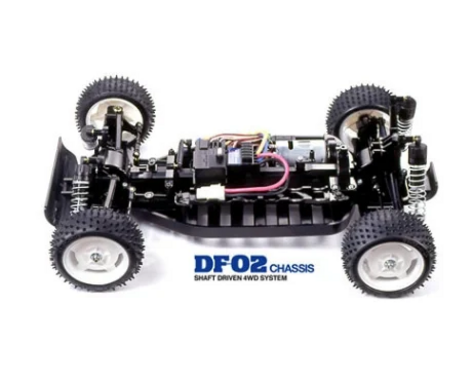

タミヤ DF-02

引用元画像：タミヤ公式サイト
📋 基本情報
| メーカー | タミヤ（Tamiya） |
|---|---|
| 機種名 | DF-02 |
| 型番 | 58328（グラベルハウンド）、58334（ライジングストーム）、58550（エアロアバンテ）など |
| 発売時期 | 2004年6月 |
| 生産状況 | 生産終了 |
| カテゴリー | ラジコンカー（1/10スケール 電動RCカー） |
| サブカテゴリー | 4WDバギー（オフロード入門モデル） |
📏 シャーシスペック
| 全長 | 400mm |
|---|---|
| 全幅 | 249mm |
| 全高 | 170mm |
| ホイールベース | 未記載 |
| トレッド | ワイドトレッド |
| タイヤ径 | 86mm（前後とも） |
| フレーム | バスタブタイプ（ABS製） |
⚙️ 駆動系
| 駆動方式 | 縦置きモーター・シャフトドライブ4WD |
|---|---|
| デフギヤ | 前後密閉式ギヤボックス内蔵 |
| ギヤ比 | 未記載 |
| モーター | 540タイプ（付属） |
| ベアリング | 8個装備（駆動ロス低減） |
🔧 サスペンション
| 形式 | 4輪ダブルウィッシュボーン（4輪独立懸架） |
|---|---|
| ダンパー | オイルダンパー（ピロボールマウント） |
| ステアリング | ターンバックルシャフト採用（トー角調整可能） |
💡 特徴
タミヤ数年ぶりの完全新作バギー
- TT-01の「バッテリー、モーター縦置きレイアウト」を基礎として開発
- バギーモデル新ラインナップの鏑矢となったモデル
- 構造の単純さと価格の低さで入門用モデルとして最適
走行安定性と信頼性
- 縦置きモーター・シャフトドライブ4WDによる駆動効率の高さ
- 低重心・ワイドトレッドのバスタブタイプフレーム
- RCメカや走行用バッテリーをフラットに搭載
本格的な足回り
- ショック吸収性に優れたオイルダンパー装備
- 4輪ダブルウィッシュボーンサスペンション
- たっぷりとしたサスストロークで荒れた路面でも高トラクション
メンテナンス性
- 前後密閉式ギヤボックスで砂や小石の進入をシャットアウト
- ギヤまわりにボールベアリング8個装備で駆動ロス低減
- ターンバックルシャフトによるトー角調整
🔧 ぽすとそに工房での修理実績
修理難易度
★☆☆☆☆（非常に簡単、初心者でも修理可能）
よくある故障・注意点
- アップライトが破損しやすい（補強推奨）
- 車高が低めで小石でシャーシを擦りやすい
- ステアリング周りの強度にやや難あり（乱暴な走行は注意）
- ビスの締めすぎに注意
修理のポイント
- アップライトは消耗品として予備パーツの確保を推奨
- ステアリング周りの定期点検が重要
- 密閉式ギヤボックスのため内部メンテナンスは計画的に
- ビスの締めすぎによる変形・破損に注意
その他の特徴
- 入門用バギーとして最適な構成
- 価格の低さと構造の単純さが魅力
- 多彩なボディバリエーション（グラベルハウンド、ライジングストーム、エアロアバンテなど）
- オフロード走行を存分に楽しめる性能